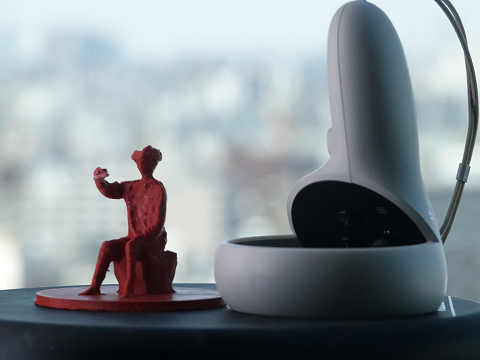
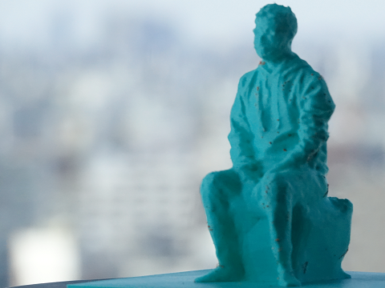
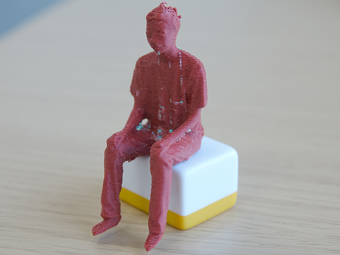
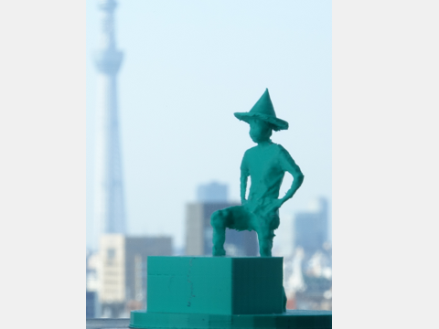
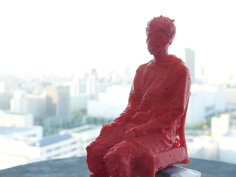
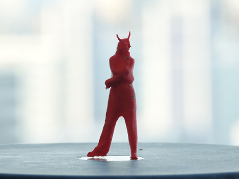
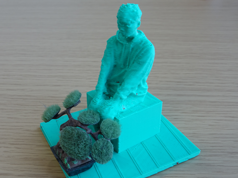

Faculty member
 |
Takashi Ijiri, Ph.D. Principal Investigator web page |
| |
Takashi Ijiri, Ph.D. Principal Investigator web page |
|  | Kyohei Masuko, Project: 3D VR navigation. |
 |
Takenori Kitsuta, Project: 2D Sketch interface. |
| Junpei Fujikawa, Project: Fabrication. |
| |
Tsubasa Saito, Project: charactor animation in VR. |
| Yuki Honda, Project: image based authentication. |
| |
Ryo Inoue, Project: fitness training in VR. |
 |
Yuki Kimura, Project: Modeling and segmentation. |
| Ryoma Goto, Project: Modeling and segmentation. |
|  | Syunta Morokawa, Project: VR tools. |
|  | Haruhisa Tanaka, Project: Smart mirrors. |
|  | Yuki Yabumoto, Project: Modeling with NeRF. |
| Yuya Uchida, Project: Music analysis. |
 |
Takuma Taki, Project: Illustration. |
|  | Syogo Uda, Project: VR tools. |
|  | Yukina Kimura, Project: Effect design tools. |
| Takuhiro Nishida, Project: Modeling. |
|  | Tomoya Maruno, Project: VR tools. |
| |
Honoka Kyomasu, Project: Image Processing. |
| |
Marin Maekawa, Project: smart mirror. |
| |
Ryota Ishibashi, Project: Posture Estimation for VR. |
| |
Hiroki Akamatsu, Project: Posture Estimation for VR. |